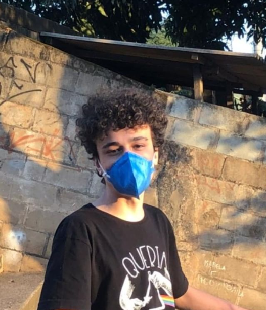

Criadores
André HP
Olá! Eu sou o André, mas me conhecem por HP. Trabalho com desenvolvimento de páginas web desde meus 15 anos, essa sempre foi a minha paixão. Para mim não se trata apenas de um html com tags e estilos, é uma forma de arte, de expressar os seus sentimentos e mostrar ao mundo que você existe! Trabalho com meu colega Francisco desde que iniciei minha jornada de programador, evoluímos bastante desde o nosso primeiro site de truco . Agradeço ao meu colega Francisco por todo o aprendizado ao longo desses anos, e ao meu primeiro professor, Flávio Coutinho, pelo qual tenho uma enorme admiração.
Redes sociais Instagram
Francisco
Fala aí! Beleza ou não beleza? Meu nome é Francisco, sou programador, desenvolvedor web e designer. o Annoyou foi um dos projetos em que mais me dediquei, foram dias e dias virados encontrando bugs e resolvendo os problemas (tentando). Agradeço ao meu colega HP, que esteve comigo desde o início de minha carreira e me ensinou tantas coisas. Sou grato também ao meu professor do Cefet, Daniel Hasan, minha inspiração para me tornar um desenvolvedor web. Espero que você goste do site! (Ou não)
Redes sociais Instagram